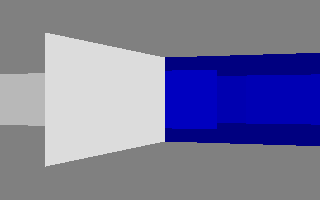
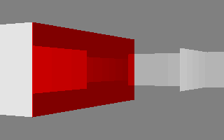
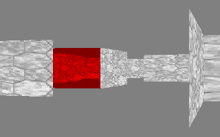
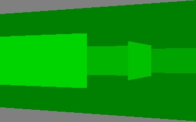
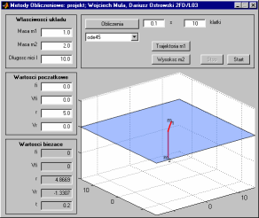

Studia
Ostatnio uaktualniane: 3.04.2006
Strona główna
Sztuczna inteligencja
- Zbiory rozmyte
- pythonowa klasa plus mała demonstracja (wykresy dostępne
przez GNUplota)
Podstawy programowania funkcjonalnego i weryfikacji
- Emulator maszyny RAM (23.01.2005)
- Program konsolowy.
- Procesor
- Prosty procesor, który interpretuje rozkazy ADD, SUB,
MULT, DIV, SQRT, SET, LOAD oraz STORE.
- SML: moje wersja operacji na listach (14.11.2004)
Zostały zdefiniowane następujące funkcje:
- @ — łączenie list
- rev — odwrócenie listy
- length — długość listy
- maxint — maksymalna wartość całkowitoliczbowa na liście
- map — aplikacja funkcji dla każdego elementu listy
- head — pierwszy element listy
- tail — pominięty pierwszy element
- nth — n-ty element listy
- last — ostatni element listy
- take — n-pierwszych elementów listy
- drop — pominięte n pierwszych elementów
- concat — połączenie dwóch list
- member — sprawdza czy coś należy do listy
- filter — zwraca te elementy listy, dla których predykat jest prawdziwy
- partition — rozdziela listę na dwie, według predykatu
- partition2 — szybsza wersja
- zip — łączy dwie listy w listę par
- unzip — rozdziela listę par na dwie listy
- foldl
- remove — usuwa podany elementy z listy
- removedup — usuwa powtarzające się elementy
- Liczy słabo rosnące
Następujące funkcje zostały zdefiniowane:
- isok — sprawdza czy lista jest słabo rosnąca
- insert — dołącza do listy element
- merge — łączy dwie listy słabo rosnące
Pozostałe funkcje
- prefix — sprawdza, czy jedna lista jest prefiksem drugiej listy
- collect_dup — zwraca tylko te elementy, które występują na liście 2 lub więcej razy
- collect_singles — zwraca tylko te elementy, które występują na liście dokładnie raz
- remove_odd — usuwa co drugi element listy
- int2real — zamienia liczbę typu integer na real
- intpow — potęgowanie liczb całkowitych
Algorytmy i struktury danych
- Emulator maszyny RAM [HTML] (kwiecień 2003, 27.10.2008)
- Dostępna jest wersja napisana w JavaScript, którą uruchamia się
bezpośrednio w przeglądarce. Istnieje także wersje konsolowe napisane
w Pythonie i SML-u, aczkolwiek obie nie tak bardzo rozbudowane jak ta
Javascriptowa.
Architektura komputerów
Programy należy kompilować w Borland C, wersja 3.:
- Projekt zaliczeniowy — labirynt 3D (źródło + .exe) (16.05.2004)
- W programie zwiedza się wylosowany labirynt, sterowanie jest
takie, jak w większości gier FPP. Istnieje wersja tylko pod
DOS, aczkolwiek praktycznie całość została napisana i
przetestowana w Linuksie, w X Window System.




Metody obliczeniowe
- Projekt [m-pliki] [PDF] [TeX, rysunki] (4.07.2004)
Sformułować, przy użyciu metody Lagrange'a II rodzaju,
równania różniczkowe dla podanego układu mechanicznego.

Elementy Logiki i Arytmetyki Komputerów
Pliki dla programu TkGate.
- flipflop.v
- przerzutnik typu T, JK i JK jako dwójka licząca
- 92.v
- licznik scalony serii '92 (mod12)
- mod12_1.v
- mod 12 zrealizowany za pomocą mod3 i mod4 połączonych kaskadowo
- mod12_2.v
- mod 12 zrealizowany za pomocą licznika mod16
- ahead.v
- sumator 4-bitowy z przeniesieniami
równoległymi (carry-look-ahead)
- ahead_vs_ripple.v
- porównanie szybkości działania sumatora z przeniesieniami
równoległymi z sumatorem z przeniesieniami szeregowymi
- ahead_vs_ripple.gss
- skrypt inicjujący powyższą symulację (rozmieszczane
są próbniki dla najważniejszych sygnałów)
Sprawozdania
- Ćwicznie 2 i 3 [ps.gz] [src.gz] (4, 4.5)
- Ćwiczenie 2 — Synteza przerzutników synchronicznych,
ćwiczenie 3 — Analiza i synteza układów synchronicznych
- Ćwicznie 4 [ps.gz] [src.gz] (5)
- Liczniki asynchroniczne: realizacja licznika
asynchronicznego na kilka sposobów
- Ćwicznie 5 [ps.gz] [src.gz] (5)
- Liczniki synchroniczne: realizacja licznika
synchronicznego, zliczającego w podanym kodzie
(tutaj: 5-bitowy Johnsona)
- Ćwicznie 6 [ps.gz] [src.gz] (5)
- ALU Sumatory: porównanie sumatorów z przeniesieniami
szeregowymi i równoległymi
- Projekt końcowy [ps.gz] [src.gz] (chyba 4)
- Zaprojektowanie licznika zliczającego w kodzie 1 z 5
Dokument utworzony przez rozszerzony rst2html.